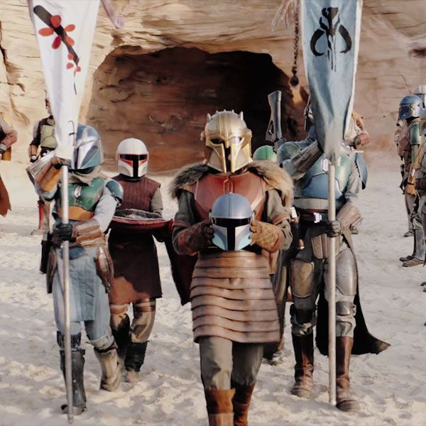

Mandalore était autrefois un monde luxuriant et sauvage, dévouée d'être sensibles, où les formes de vie dominantes étaient les mythosaures gigantesques. Tout a changé avec l'arrivée des Taung. Forcés de quitter la planète Coruscant dans les Mondes du Noyaux bien avant la fondation de la République Galactique par les bataillons humains de Zhell, les Taung ont fui vers Roon, avant d'arriver sur le monde de la Bordure Extérieure qu'ils ont appelé Mandalore vers 7000 BBY. En l'honneur de leur chef, Mandalore le Premier, les Taungs ont nommé ce monde Manda'yaim, ou « la maison du Mand'alor », qui a ensuite été transformé en Mandalore dans la langue Galactic Basic Standard. De même, les Taungs se sont rebaptisés Mandaloriens, ou Mando'ade: « fils et filles de Mandalore ». Les Mandaloriens nouvellement baptisés se sont mis à apprivoiser leur nouveau monde et, ce faisant, ont massacré les énormes mythosaures, ne laissant derrière eux que leurs squelettes. Ironiquement, quelques siècles plus tard, les Taungs eux-mêmes suuffrèrent du même sort, ne laissant derrière eux qu'une histoire et une culture.
Dans les années qui suivirent la défaite de la Confrérie des Ténèbres par la République Galactique à Ruusan, et la réforme ultérieure de la République qui marqua la fin des Nouvelles Guerres Sith, les Mandaloriens de Mandalore s'efforcèrent de se remodeler en une société plus experte technologiquement et plus rigide et militante. La montée du militantisme de Mandalore si peu de temps après la guerre dévastatrice contre les Sith alarma à la fois la République et ses protecteurs Jedi, et alors que plusieurs chefs de clan exhortèrent Mandalore à faire la paix et à rejoindre la République, ils furent sommairement étouffés. Ne voulant pas subir une seconde guerre avec les Mandaloriens, en 738 BBY, les Jedi menèrent une force de frappe de la République dans un conflit bref et écrasant connu sous le nom d'Excision Mandalorienne qui dévasta le secteur de Mandalore et transforma certaines parties de Mandalore en déserts inhospitaliers de sable blanc.